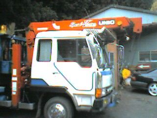
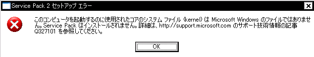

新年明けましておめでとうございます。
今年は猪年。
俺は今年の四月で24歳。
ってことは年男です。
そうかぁ、小学六年生からもう12年も経ったのかぁ、と。
えー、地元長谷寺に、初詣にも行きました。
御開帳といって、新年一発目で大仏の緞帳を開く、とゆー
ご利益が超ありそうな行事も、最前列で見ることが出来ました。
で、毎年恒例、友達を交えて我が家での年越しそばも食べ、明け方まで遊び、御節料理も食べ、、、
っとまー、滞りなく新年を迎えることが出来ましたどうもTEVAです。
おみくじを引き、、、凶でした。どうもTEVAです○|￣|＿
おいおいおい！凶なんて生まれて初めて引いちまったよ！
どうすんだよ俺！
滞ってるじゃん！俺！！
…えー、、、。
今年も、毎年恒例。
親戚一同集まっての、ボードに行ってきますですよ。
いつまで行けるかわからねーんだけど、まだ行ける事の幸せをかみ締めながら。
楽しんできますね。
ぐうぇうぇ
…でも、、、凶だったんだよなぁ、、、。
待ち人来ず。失せもの出でず。願い事叶わず、、、、
最悪かい○|￣|＿
…ま、、、っまあ！！
災い転じて福となすとゆーありがたい格言がわるわけだし！！
ポジティヴシンキングで行きますよ！！
そんな程度で！俺の1年は駄目になったりなんかしないのだーー！だーーー！だああああああああああああ！！！！
んだば、行ってきます(ﾟ∀ﾟ)ﾉｼ
皆様、よいお正月を！
ｵﾜﾘ
えーと、めりーくりｓ…遅すぎますね(´ω`)
28日に仕事納めでした。
で、その後はがががーって部屋の掃除したり家の掃除したり。
こっそり風邪気味になっちゃったり。
ちくしょう、丸一年無病記録がぎりぎりで終わっちまった。
近況！
「トラックの運転手になりたくなっちゃったので、12月でここを辞めたいと思います！」
と、11月初旬に言い放ち、それから一週間で免許を取得してきた俺。
まー向こうもここまで早く取ってくるとは思ってなかったらしいですね。
「え、ほんまかいな」だとさｗ
で、だ。
うちの警備会社にはなんか、その界隈で一番えらいとかゆー、会長がいるんですけどね。
その会長が「お前はなんか危なっかしいからまだ駄目だ！」と。
( ﾟдﾟ)
「そんなにトラックに乗りたいんなら俺が調達してやる。」
(；ﾟдﾟ)
ピ・ポ・パ、、、プルルルッ
「おう、俺や。うちの社員で大型取りよった奴がいるんやけど、4t一台空いてないか？」
「ん、ん、おう。じゃあ23日にちょっと借りるで。」
プチ
(⊃д⊂;)ゴシゴシ
「っつーわけや。それで練習してからにしろ。」
「だからお前はまだうちの会社に残ってれ。」
_,._
(；ﾟ Дﾟ）！？
って事で、遊んで 練習してきましたよ、4tトラック。
 これはユニックって奴ですね。
台車だからすんげーでかいのですよー(´∀`)
よーし！次は10tダンプだーーー
いや、それより俺はこれからどうなるだー！？
えーと
っは！
後数時間で2006年が終わっちゃうじゃないか！
えーとえーと
そうだ、今年初めに立てていた目標
「ネオTEVAと化す」は達成できましたか！？
はい！曲がりなりにも達成出来たと思います！
「えー、ほんまかいな」
と、お思いのそこの貴方！
ツッコミは禁止です！
「まだまだこれからやん」
と、お思いの貴方も！
鋭い！！(何
えーと、次の目標は何にしようかなー
よし、じゃあ
「早寝早起き」でいきます！（小学生か
色々あったけど。
なんだかんだで充実した一年でした。
来年も、今と同じようなノリで皆と付き合っていけたらいいなと思っています。
貴方にとっても、俺にとっても。
良い年でありますように。
こんないい加減な僕で申し訳ないですが。
今年もよろしくお願いいたします。
大学の友達と忘年会に行ってきました。
いやー久しぶり。たった9ヶ月程かもしれないがずいぶんと久しぶり。
何も変わってない奴もいればどうしちゃったのお前？
ってぐらい変わってる奴もいました。
それは俺です(何
そう言われてもなー自分ではわかんねーもんよー
なんつか、学生の頃と同じノリで遊べる奴らってのは素敵ですね。
卒業と同時に社会人になった奴が多かったわけですが、
みんなこの日のために頑張って休みをとってきてくれたり。
そーゆーの、嬉しかったですね。
でも、超楽しみにしてたんだけどもノロウィルスにやられちまった同僚の為、今日来れなかった奴もいたり。
残念でしたが又の機会にって事で。
別に永遠に会えないわけじゃないしねーｂ
えー、忘年会の様子は省略するとして。
帰りにコーヒーを買ったんですよ。コーヒー。
店の前を通った時にめっちゃいい匂いが漂ってきたんでね、つい。
まあ俺、店種類とかよくわかんないんで店番のおばちゃんに
「酸味の少なくてどーたらこーたら(何 な奴ありますかシルヴプレ？」
って具合に華麗な注文をしたんです。
そしたら
「ああ、じゃあこちらがお薦めですムシュー」
とまーめっちゃエレガントな答えが返ってきました。
やるなあおばちゃん。
んで俺、コーヒーミルとか持ってないんでその場で挽いて貰って、200g購入。
サンクス、ミスマダーム
まーこれが良い香りでしてね。とんでもなく美味しそうなの。
袋は閉じられてるんだけど、こう、にじみ出てくるっつーか。
隠しきれないこの香り、みたいな。
まるで俺のあふれ出すワイルドさみたいｎグホッ
-- しばらくお待ち下さい --
むーここは誰ですか？大丈夫ですか？
大丈夫も何もあたしはあの頃から何一つかわっちゃいない（だめっぽい
ゴホン。
で、だ。
えー、良い香りなんですわ。その豆。
だから電車の中で、余りにも良い香りなんで。
袋で口を覆って「スーハスーハ」
周囲にバレないように、あくまでも自然に「スーハスーハ」「スーハスーハ」
「スーーー…↑ハァーーー…↓」
アンパンっすか。
それアンパンの吸い方っすよ。
例えそう見えなくとも、電車の中でそんな怪しい行為をするなと。
どんな馬鹿野郎なんだこの俺は。
馬鹿か俺はーー
つまりは
やりたいように馬鹿ばっかやってないでちったぁ我慢も覚えなさいってこった。
は！誰だ今馬鹿って言った奴は！？
「お前かー！」
貴方自身です、TEVAさん。
「それともお前かー！」
だからあなたですってば、TEVAさん。
「俺かー！」
落ち着いてくださいTEVAさん。
ｵﾜﾘ
俺の仕事は警備員。
トラックとか10tダンプとか、馬鹿でかい車を沢山見ますよね。
ってかそれを相手に仕事とかが多いわけでさ。
ある日、「あーあんなでっかい車に乗ってみたいなー」って思ったが最後。
そうか、俺も免許取ればいいんじゃん。みたいな。
今やらなきゃ、4月から就職したらもう二度と出来ないぞ、みたいな。
思い立ったが吉日。
レッツ免許センター！
…飛び込み二回で取得出来ちゃいました(・ｘ・;)
ウホッ
レベルアップ！
・2006/12/08、TEVAは大型免許を取得した！
・世に存在するほとんどの車を運転出来るようになった！
・TEVAは求職活動に乗り出した！
俺、牛丼が好きなんです。
どうもTEVAです。
5日ぶりかな？家に帰ってきたの。
今日は日曜日、でも現場があるっつーんで出勤してきました。
荒稼ぎー荒稼ぎー
ぐうぇへへ
たまに皆とお店に食べに行ったりもしてましたが。
まーほぼ毎日コンビニ弁当なわけですね。
で、寒いし。腹減ってるし。エネルギーを回復するために肉的な食い物を求めるわけですね。
だから牛丼率がめっちゃ高い。
96-7%位じゃないかな（高
「あー腹減ったなー何か肉的な物無いかなー。お、牛丼あるじゃん」
みたいな。
まあカルビ丼が多いんですがね。
最近牛丼って少ない。
まあどっちでもいいんですが。
共に肉だし。
で、今晩。
バイト終わって久々にうちでごはん食べたんですが、そのメニューが
・ごはん、豚汁、煮浸し、高野豆腐、きんぴらごぼう。
うひょー
俺の好きなもんばっかしじゃないっすか！
どれも大好きです。
「地味だなおいっ」
ってゆーツッコミは受け付けません。
だって美味しいんだもん。
好きなんだもん。
「おっさんかお前はっ」
ってゆーツッコミも受け付けません。
だって好きなんだもんよー
レンジでチンじゃないご飯を食べる幸せ。
牛丼では味わえないこの幸せ。
みんな！おふくろ味は忘れないようにしようぜ！
作ってもらって当たり前と思っちゃなんねーぞ！
有り難いわぁ
この年でまだ食わしてもらってる事が
ところでおふくろってなんだろ
なんでおふくろって言うんだろ？（’’
別に偏見とか無いけど。
単にいつの時代の人間やねんと。
同級生でおふくろって呼ぶ奴がいたら、俺、たぶん引きます（ぉ
うわ、ついに一ヶ月も書けなかった。
ギャース今月ももう終わりじゃん
糸の切れた風船みたいな性格ですどうもTEVAです。
どうにか部屋の片付けも一段落に向かい、
壁からぶら下がっているLANケーブルをPCに差し込み、とりあえずネット復帰です。
んで、せっかく部屋が綺麗になって、見通しも良くなって、広くなって、本棚の整理が出来て、今まで捨てるに捨てられなかった物も思い切って捨てて、すっきりした机があるんだから（ゼーハー(*´д`)=3
これまたずっとやってみたかった家庭内LANでも組んでみようかと思い立ちました。
机の周りだけ無線LANで整えるとか、ね。
使えやしねえと烙印を押されていた、10年前のダメポデスクトップタワーにもLANカードを差し込んでやり、素敵Debianマシンに仕立て上げました。
モニタは流用しちゃってもうこの部屋にはありませんが、SSHでアクセス・管理すりゃ問題なかろうと。
あ、やべ。
夢が広がる。
で、あー
実は今日までWindowsSP1で頑張ってきてたんですが、いい加減SP2にしてもいいかなと思いました。
まー今までSP2を入れなかった理由としては、なんか鬱陶しかったからなんですね＾＾；
「コノプログラムハアンゼンデハナイカモシレマセンホントウニジッコウシマスカ？ y/N」
あああもうごちゃごちゃとうるせーー！
みたいな。
まあSP2が出た頃に慌てて入れて、えらい目に遭った人達を知っているので、それが嫌だったってのがひとつ。
もう一つが、そろそろVistaが出るとか出ないとか騒いでいるので、SP2もそろそろ枯れてきただろう、と。
あ、あともう一つ。
SP2だとLANでの共有設定がラクなんですわ。
以上がSP2導入の動機です。
で、まー
ネットからダウンロード→インストール→再起動→ダウンロード→いｎ(ry
って手順は正直めんどくさいので、SP+メーカーとゆーツールを使って、SP2HotFixCDを作成してラクをすることに。
んで、親父のPCにはあっちゅー間に適用完了。
これには正直驚かされました。
いやー便利だ。
よーし次は俺のPCに適用だー
CDインサートーコマンド実行ー再起動ーー
ギャンッ 
ｗｓでｒちゅい＠ｌｐ
うわ、ちょ、Windowsでkernelに関わるエラーが出るなんて初めてだよ。
え、これってかなり深刻？
再インストールが必要？
え、まじで？(;ω;)
OK、望むところだ。
実際いつでも再インストール出来るような環境構築してますからね。
今すぐゼロからやり直せって言われても、「はいはー」なんつって簡単に出来ますよーだ。
身体は硬いけど物腰はとっても柔らかさ！（違
んで、問題のLAN共有ですが、あっさり設定完了（’’
あれ、こんな簡単だったのか。
なんで今までやらなかったんだろう。
なんで今まで
隣の部屋の妹にデータを渡すためにコンパクトフラッシュなんて使っていたんだろう。
CDドライブの付いていないセカンドノートも、これで問題解決じゃないか、、、。